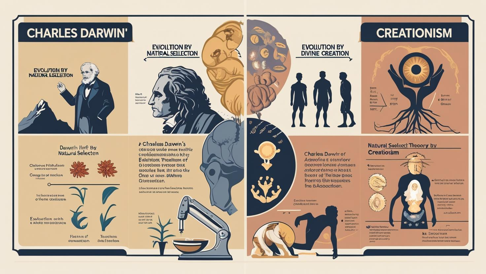

1. “Let There Be Light” — The First Command of God
Genesis 1:3 records the first audible release of God’s will into creation: “Let there be Light.” And there was Light.
For this command to be executed, sound had to exist. Sound produces vibration. Vibration forms syllables. Syllables form words. God — who is Love — released a power from His heart, an oil of anointing fire, which became the spiritual engine generating vibration.
From vibration came sound waves. Sound produced words. And by His Word, creation took place.
Psalm 148: The Decree of Creation
“He spoke and they were made; He commanded and they were created. He has established them forever; He issued a decree that will never pass away.” (Psalm 148:5–6)
This three-fold declaration mirrors the triune fullness of God — body, soul, and spirit — all active in creation.
The Name Elohim
The first name for God in the Bible is Elohim. The Hebrew suffix -im makes the word plural, revealing the plurality within the One God. Thus, the Creator appears as: Elohim Tzva’ot — The LORD God of Hosts.
2. Creation vs Evolution — The Flame of Intelligent Design
Scroll 1 reveals Christ as the Light who exposed the lie of evolution. Evolution is not merely a scientific debate — it is a spiritual deception designed to remove God from the origins of man.
DNA, atoms, galaxies, and biological systems bear the unmistakable fingerprint of intelligence. Design requires a Designer.
From the Fibonacci sequence in plants to the golden ratio in galaxies — Creation preaches a sermon louder than words.

3. Divine Symbols of the Scroll
- Oil lamp and flame 🔥 (awakening of the spirit)
- Hebrew symbols: Ruach (Spirit) & Ner (Lamp)
- Light breaking the darkness

4. Jesus: The Word Through Whom All Was Made
John 1:1–3 reveals the mystery:
“In the beginning was the Word… and all things were made through Him.”
Christ is the Architect, Blueprint, and Sustainer of creation.
5. Chart: Genesis vs Darwin
Visual comparison of Genesis creation and Darwinian evolution
6. Call to Action
The nations must return to the truth: God created all things. Evolution erases divine intent — but creation restores identity.
Prophetic Activation
- Surrender to the flame of calling
- Reject fear, shame, and doubt
- Awaken the divine spark within
7. Supporting Scriptures
- Genesis 1:1–5 — Light before luminaries
- John 1:1–5 — In Him was life, and the life was the light of men
- Colossians 1:15–17 — All things created through Christ
- Psalm 148:5–6 — He spoke and they were created
- Romans 1:20 — His invisible qualities are clearly seen